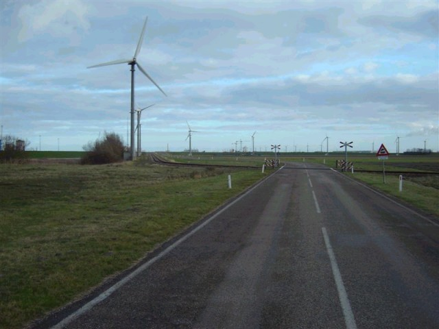
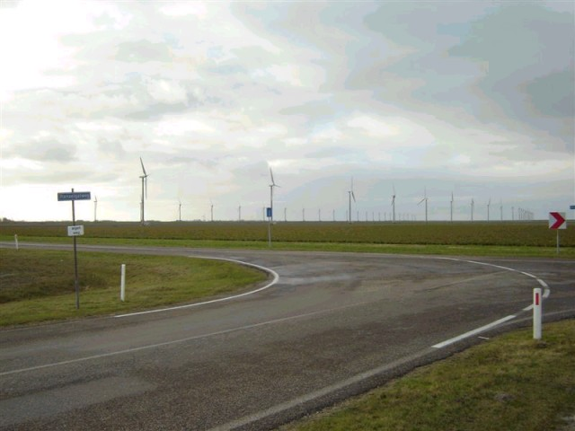
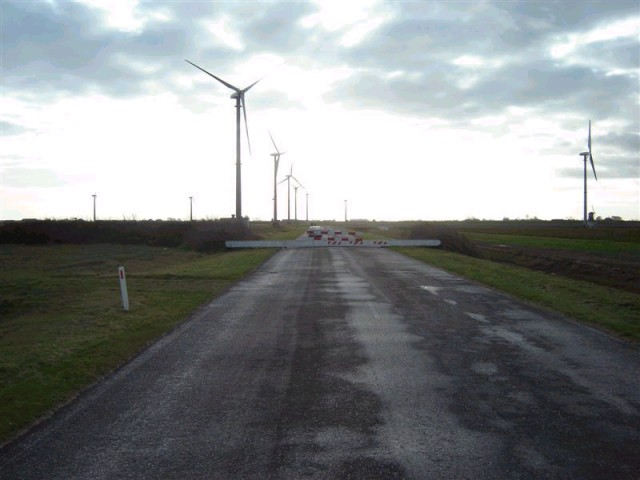
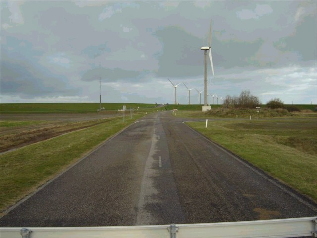
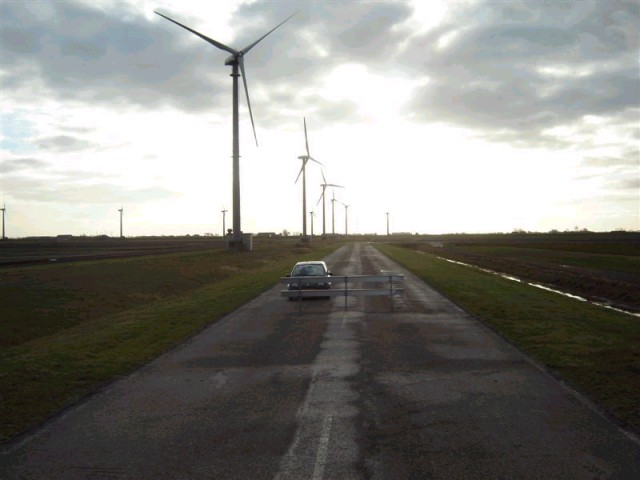
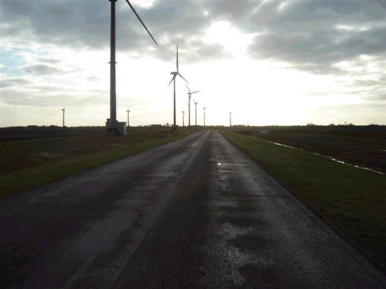
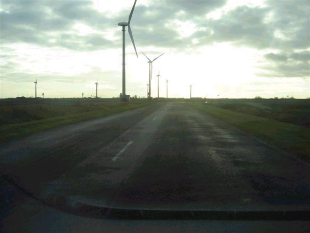

Numbers and arrows on the map represent the location and direction in which the photos were taken. Click the hyperlinks above to view the photographs.
Eemshaven - Meeuwen Bocht (Haven Bocht to Goliath Bocht)
|| Contents | Westereemsweg | Ranselgatweg | Meeuwen Bocht | Meeuwenstaartweg | Hairpin | Kwedler ||
Numbers and arrows on the map represent the location and direction in which the
photos were taken. Click the hyperlinks above to view the photographs.
Return to racingcircuits.net's Photo Archive Main Index

15 - Looking from the "Meeuwen
Bocht" back towards "Spoor 1".

16 - "Meeuwen Bocht"

17 - Looking from the "Meeuwen
Bocht" towards the third straight. To prevent illegal streetracing, the circuit is
barricaded.

18 - Looking back to the "Meeuwen
Bocht".

19 - From the barricade looking towards the
"Goliath Bocht".

20 - Half way the third straight.

21 - Just before the "Goliath
Bocht".
Photographs and text ©Roelard Smit. Reproduced here with kind permission.